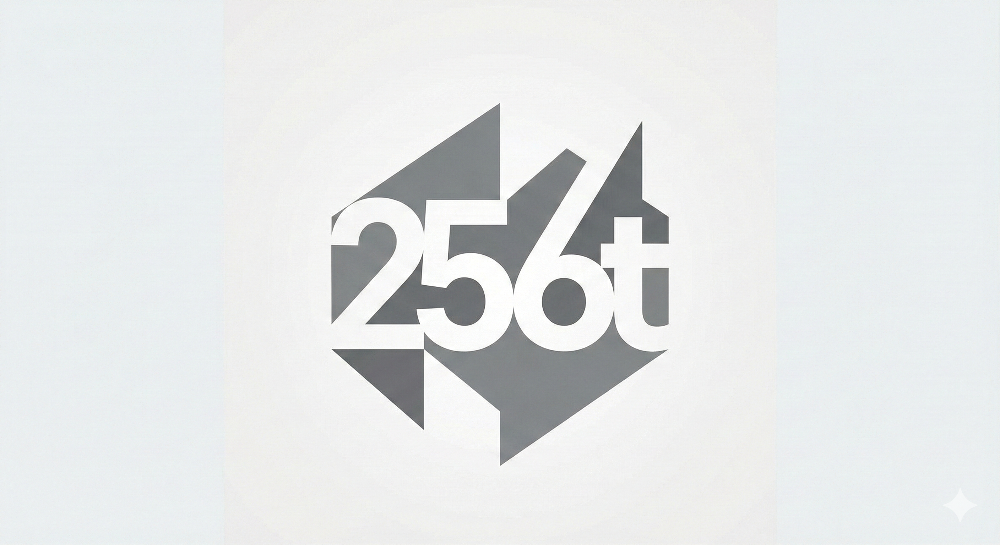
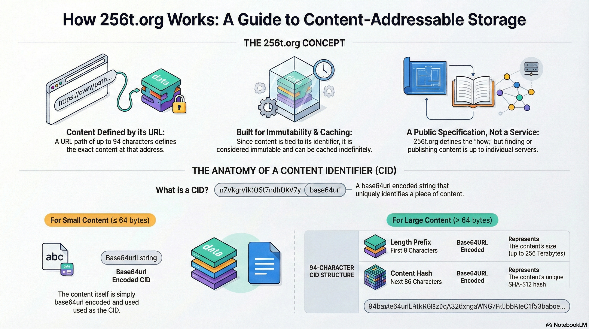

Esta página foi traduzida automaticamente. Em caso de divergência, prevalece o original em inglês.


O 256t.org é um domínio dedicado a ser uma especificação pública para um tipo específico de armazenamento endereçável por conteúdo. Nesse esquema, o último elemento de até 94 caracteres no caminho de uma URL define o conteúdo daquela URL. Em algum momento no futuro, ele poderá evoluir para ser também um serviço público para publicar conteúdo usando o esquema. No entanto, isso está atualmente fora do escopo deste site.
Por que o 256t.org? Um padrão simples para um armazenamento genérico endereçável por conteúdo me parece útil de modo geral.
Todo caminho de 94 caracteres pode ser usado para obter o conteúdo que corresponde ao tamanho e ao hash especificados. Se nenhum conteúdo estiver disponível, um 404 é retornado.
Um hash SHA-512 tem 512 bits, ou 64 bytes. 64 bytes podem ser armazenados em uma string base64 de 86 caracteres.
(64 * 8) / 6 = 85.333... ~= 86
Conteúdo de 64 bytes ou menos pode ser armazenado diretamente em espaço igual ou menor. Nesses casos, o próprio conteúdo deve ser codificado em base64 e usado com o mínimo de preenchimento, em vez de usar seu hash.
Uma string base64 de 8 caracteres pode armazenar 48 bits.
2^48 = 2^40 * 2^8
= 2^10 * 2^10 * 2^10 * 2^10 * 2^8
= 2^8 * 2^10 * 2^10 * 2^10 * 2^10
= 256 K M G T
O que segue pode ser tratado como verdadeiro o bastante, apesar de ser falso: - Um caminho de 94 caracteres determina o conteúdo de forma única. (No entanto, isso é totalmente verdadeiro para conteúdo com menos de 64 bytes.) - O conteúdo é imutável. (Ele poderia ser substituído por um conteúdo diferente que ainda corresponda à descrição.) - O conteúdo pode ser armazenado em cache com segurança indefinidamente.
Assim, todas as metainformações HTTP, como cabeçalhos e ETags, indicarão que o conteúdo pode ser armazenado em cache indefinidamente.
A etiqueta de conteúdo de 94 caracteres consiste em um prefixo de tamanho de 8 caracteres seguido de um hash de 86 caracteres.
| tamanho do conteúdo | hash do conteúdo | o próprio conteúdo | |
|---|---|---|---|
| quando | sempre | length(content) > 64 | length(content) <= 64 |
| início | 1 | 9 | 9 |
| fim | 8 | 94 | 94 |
| tamanho | 8 | 86 | 0 a 86 |
| formato | Base64 | Base64 | Base64 |
| info | length(content) | sha-512(content) | content |
Mais especificamente, Base64 segura para nomes de arquivo e URLs, também conhecida como base64url.
Essa string base64 de 94 caracteres ou menos, que identifica um conteúdo, será chamada de identificador de conteúdo, ou CID (do inglês content identifier).
Qualquer servidor pode expor uma URL base com conteúdos que sigam esta especificação. Infelizmente, quais servidores hospedam quais conteúdos e como encontrá-los está fora do escopo deste texto. Este servidor hospeda um pequeno conjunto de CIDs aqui.
Essas coisas estão fora do escopo deste texto.
O diretório examples/ contém arquivos de exemplo para testar a geração e a verificação de CIDs. Entre eles há recursos com a marca 256t que demonstram a especificação com vários tipos de mídia:
| Arquivo | Descrição |
|---|---|
| 256t.mp4 | Vídeo explicando a especificação de armazenamento endereçável por conteúdo do 256t.org (ou no YouTube) (em inglês) |
| 256t.png | Representação visual do conceito do 256t.org |
| 256t_Content_Addressable_Storage_Specification.pdf | Documentação em PDF da especificação completa (em inglês) |
| 256t_and_the_End_of_Broken_Links.m4a | Discussão em áudio sobre como o 256t.org lida com links quebrados (em inglês) |
| 256t_logo.jpg | Logotipo do 256t.org (formato JPEG) |
| 256t_logo.png | Logotipo do 256t.org (formato PNG) |
| 256t_qr_code.png | QR code com link para o 256t.org |
Esses arquivos podem ser usados com a ferramenta Exemplos de CID ou com a ferramenta Verificação de CID de arquivo para verificar seus identificadores de conteúdo.
Um rascunho de RFC que propõe o esquema de URI t256: — uma URL que contém apenas um CID, sem host nem caminho — está disponível em rfc/draft-cox-t256-uri-scheme-00.md. (A grafia 256t: não é um esquema de URI válido porque a RFC 3986 exige que os esquemas comecem com uma letra.)
Para informações sobre como implantar e publicar armazenamento endereçável por conteúdo usando CIDs, consulte Publicação e armazenamento.
Tem dúvidas sobre o 256t.org? Confira a página de Perguntas frequentes para ver respostas a perguntas comuns sobre CIDs, implementação, segurança e mais.
Há alguns tipos diferentes de colisão que é importante distinguir: - acidental — puramente por acaso - adversarial — alguém tentou provocá-la - existente — um CID foi produzido a partir de conteúdos diferentes - problemática — usar o CID para obter um conteúdo retornou o conteúdo errado
As chances de uma colisão problemática são bem baixas. Há duas maneiras de minimizá-las: - Sempre verifique o conteúdo do CID. Há muitas implementações para fazer isso. É mais fácil simplesmente mentir do que engendrar uma colisão. - Reduza os adversários. Se ninguém estiver colocando conteúdo problemático onde você possa aceitá-lo, sobram apenas os acidentes.
Para mim, tudo bem simplesmente ignorar colisões problemáticas acidentais.
A especificação do 256t.org foi implementada em várias linguagens de programação. Cada implementação fornece utilitários para gerar e verificar identificadores de conteúdo (CIDs).
| Linguagem | Selo | Código |
|---|---|---|
| Bash | bash | |
| C | c | |
| C++ | cpp | |
| C# | csharp | |
| Clojure | clojure | |
| ClojureScript | clojurescript | |
| CMake | cmake | |
| Crystal | crystal | |
| D | d | |
| Dart | dart | |
| Deno | deno | |
| ECMAScript | ecmascript | |
| Elixir | elixir | |
| Elm | elm | |
| Emacs Lisp | emacs-lisp | |
| Erlang | erlang | |
| F# | fsharp | |
| Fortran | fortran | |
| Go | go | |
| Groovy | groovy | |
| Haskell | haskell | |
| Java | java | |
| JavaScript | javascript | |
| Julia | julia | |
| Kotlin | kotlin | |
| Lua | lua | |
| Nim | nim | |
| Node.js | node | |
| OCaml | ocaml | |
| Perl | perl | |
| PHP | php | |
| PowerShell | powershell | |
| Prolog | prolog | |
| Python | python | |
| R | r | |
| Racket | racket | |
| Ruby | ruby | |
| Rust | rust | |
| Scala | scala | |
| Swift | swift | |
| Tcl | tcl | |
| TypeScript | typescript | |
| Unison | unison | |
| Zig | zig |